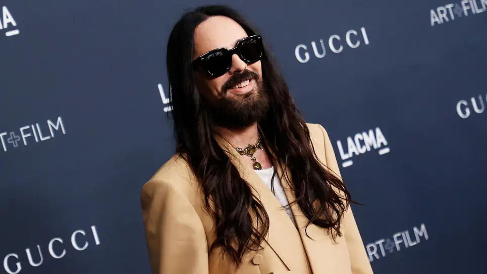

How Alessandro Michele went out of fashion at Gucci
Read the original news here
On his way out
After a 20-year-long stint at Gucci, including seven years at the helm, fashion designer Alessandro Michele is bowing out.
French luxury conglomerate Kering, Gucci’s parent company, announced Michele’s departure on Nov. 23. The firm acknowledged Michele has “played a fundamental part in making the brand what it is today through his groundbreaking creativity, while staying true to the renowned codes of the House.”
Of all the brands Kering owns—Gucci, Saint Laurent, Bottega Veneta, Balenciaga, Alexander McQueen, Brioni, Boucheron, Pomellato, DoDo, Qeelin, and Kering Eyewear—Gucci is by far the most profitable, comprising two-thirds of profits at the French luxury group.
When Michele, now 49, was promoted from head of accessories to creative director in 2015, he breathed new life into the brand, bringing more eclectic and inclusive styles to the table—or runway, rather. His gender-fluid style—putting celebrities Harry Styles and Jared Leto in pearls and pumps—attracted young buyers from the world over. Under him, the brand also forayed into the restaurant business and the metaverse.
But unfortunately for the Rome-born designer, the sheen started to wear off. Some chalk it up to a lack of newness and intrigue around Michele’s designs, and others to the lingering effects of the pandemic dampening Asia market spends.
Either way, the damage has been plain to see. Compared to rivals like LVMH (which has 75 brands including Dior, Fendi and Givenchy), French luxury brand Hermes, and Richemont (of Cartier and Chloé fame), Gucci’s growth has been lagging.
“Gucci is suffering from brand fatigue as Alessandro Michele has been doing more of the same for seven years,” Luca Solca, analyst at Bernstein, told the Financial Times. “In order to reaccelerate, Gucci doesn’t need to move to the mainstream or to become timeless. It needs to open a new creative chapter.”
His successor has not been announced yet. And questions loom around where Michele will head next, and whether, perhaps, he’ll start his own brand.
Glimpse of Gucci under Alessandro Michele, by the digits
€9.7 billion ($10.1 billion): Gucci’s revenue in 2021, up from €3.9 billion in 2015
13%: Gucci’s revenue growth in 2019, down significantly from 45% in 2015
2%: Kering shares temporarily rose on the news of Michele’s possible exit in a Women’s Wear Daily report
24%: how much Kering’s shares have fallen year-to-date versus 4% for LCMH
2019: A year of fashion faux pas for Michele's Gucci
February 2019: Gucci had to apologize for and take down an $890 sweater that drew backlash for evoking blackface
May 2019: Sikhs protest Gucci’s attempt to sell the turban, an article of faith, as a $790 fashion accessory
September 2019: When Michele put models in white straightjackets, model Ayesha Tan Jones protested on the Milan runway by raising her hands to reveal the note: “Mental health is not fashion.”
Michele's hand in reducing Gucci's environmental footprint
Under Michele, Gucci made many efforts to go greener.
In 2017, Gucci pledged to go fur-free.
In 2019, Gucci decided to go carbon neutral. The brand claims its carbon neutral across its own operations as well as its entire supply chain.
In June 2020, Gucci launched its first eco-friendly collection called Off The Grid, featuring sneakers, bags, accessories, and ready-to-wear apparel made using recycled, organic, bio-based or sustainably sourced materials
In light of the pandemic, Michele questioned if the fashion industry was producing too much, conducting, too many shows, and so on. Gucci reduced the number of annual shows from 5 to 2, declaring the fashion calendar obsolete
Alessandro Michele's parting words, in full:
“There are times when paths part ways because of the different perspectives each one of us may have. Today an extraordinary journey ends for me, lasting more than twenty years, within a company to which I have tirelessly dedicated all my love and creative passion. During this long period Gucci has been my home, my adopted family. To this extended family, to all the individuals, who have looked after and supported it, I send my most sincere thanks, my biggest and most heartfelt embrace. Together with them I have wished, dreamed, imagined. Without them, none of what I have built would have been possible. To them goes my most sincerest wish: may you continue to cultivate your dreams, the subtle and intangible matter that makes life worth living. May you continue to nourish yourselves with poetic and inclusive imagery, remaining faithful to your values. May you always live by your passions, propelled by the wind of freedom” -Alessandro Michele